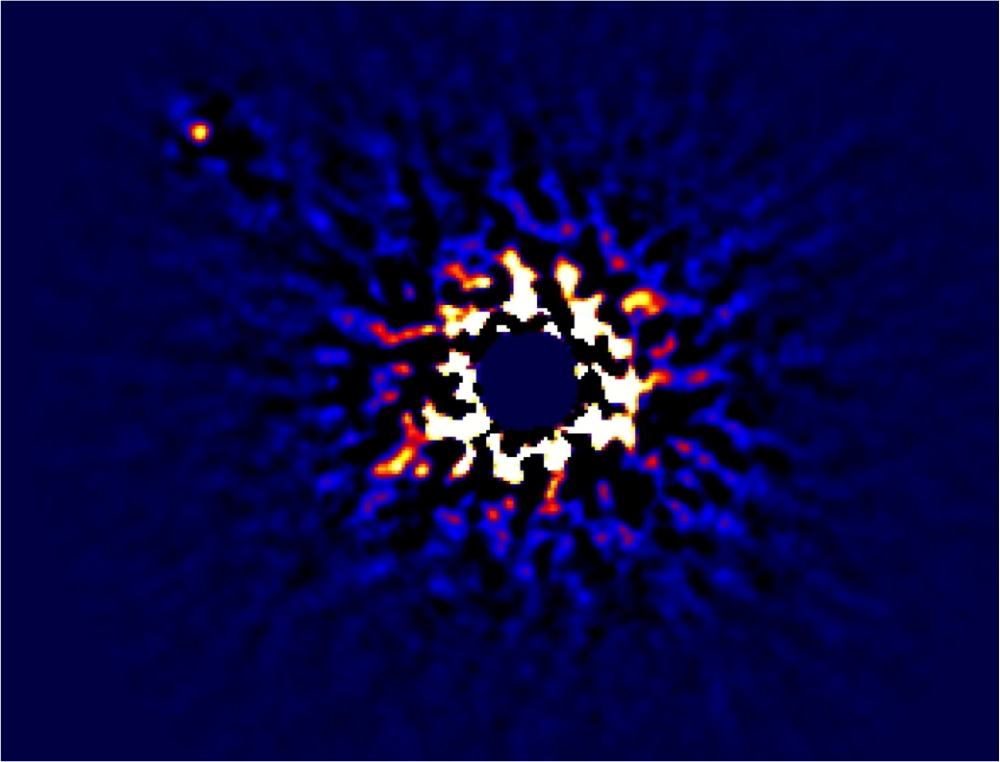
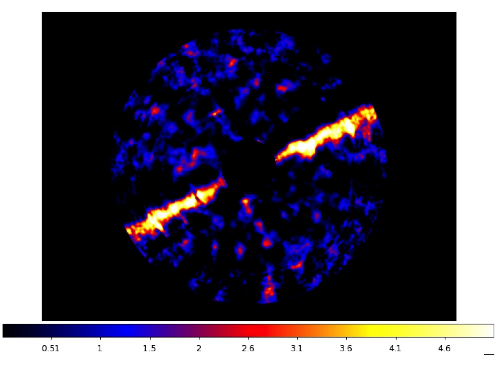

This page shows off some of the scientific highlights from SCExAO. Some of the figures have been published and others have not. Please contact us for more information.
|
Recently taken image of Kappa And b. SNR = 100 and the IWA is ~0.3”. Both aspects are 3x improved with respect to HiCIAO alone. Image Courtesy of Thayne Currie. Dec 2015 |
 |
|  |
Recently taken image of HIP79977. SNR = 3-7 and the IWA is ~0.3”. SNR improved by 2-3x with respect to HiCIAO alone. Image Courtesy of Thayne Currie. Dec 2015 |